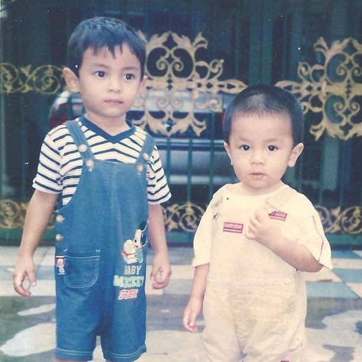

My Personal Details
| Name: |
AHMAD ASHREEFUL AMNI BIN ABDUL RAZAK |
|---|---|
| Age: |
20 years old |
| Address: |
B-303, Pangsapuri Pasir Puteri, Jalan Day, Perkampungan Portugis, Ujong Pasir, 75050 Melaka |
| Birthplace: |
Muar, Johor |
| High School: |
Malacca High School |
| SPM: |
6A 1B+ 2C |
| Interests: |
Technology, cars, sports |
Growing Up

I was born on July 4th, 2001 in Muar, Johor. But I have been living in Melaka since I was three.
Short Term Goals
For now, my short term goals are to graduate from UiTM in Diploma with First Class and Vice-Chancelor Award, Aminn.
Long Term Goals
In 10 years time, I want to be working in a big IT company, and I want to be able to manage my money well, such as having a good saving plan and investments.
Learning Objectives of CSC264
There are a few objectives in learning CSC264 for me:
- To gain knowledge in developing my on website.
- To gain experience in developing websites to be implemented in the industry.